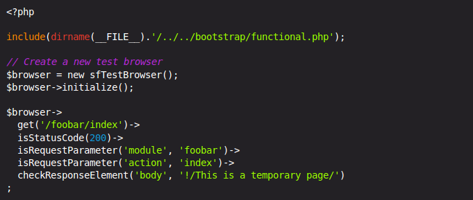
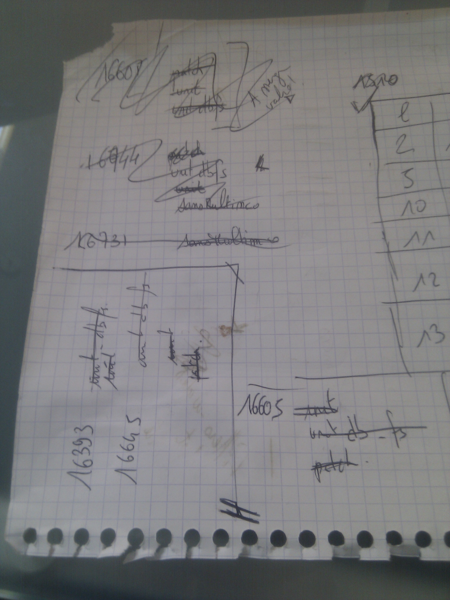
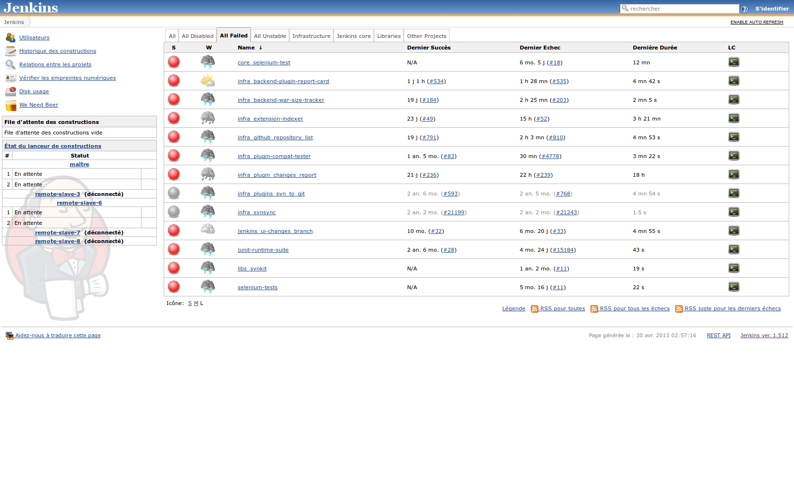

ಠ益ಠ Jenkins Khan
Apéro PHP - 30 avril 2013
Au début, pas de tests
PMSIpilot :
- Projet symfony 1.x
- SVN
- 7~10 développeurs
Puis les premiers test fonctionnels

Suivis des premiers tests unitaires
Automatisation des tests

Augmentation du nombre de tests
- Une dizaine de tests
- 30h de tests parallélisés
SVN -> git

Changement du workflow
- Branche
- Développement
- Validation
- Merge
Jenkins local
On merge sur le master du code stable
Et puis un jour

Et là, c'est le drame !

ಠ益ಠ Jenkins Khan est né !
Faciliter la vue par branche via Jenkins.
- Etat de la validation par fonctionnalités
- Vue globale de ses développements
Stack technique
- Symfony 1.4
- MySQL
- Twitter boostrap
- API Jenkins
Conclusion
Ca ne sert à rien de trouver un nom sympa à un projet si on n'est pas capable de le prononcer 3 fois de suite
sans se planter